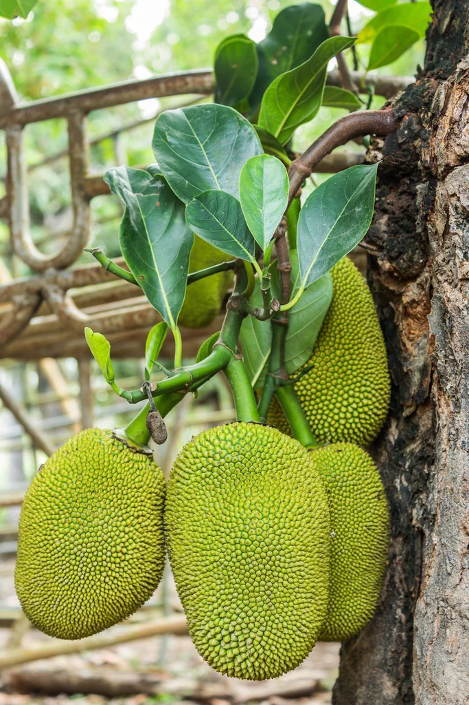

Jackfruit
Botanical Name: Artocarpus heterophyllus
Family:Moraceae
Native Region: India and Southeast Asia
Significance: Largest tree-borne fruit in the world; economically and nutritionally important.
Uses: Fruit pulp, seeds, bark, and leaves used for food and medicine.
BREIF ☰